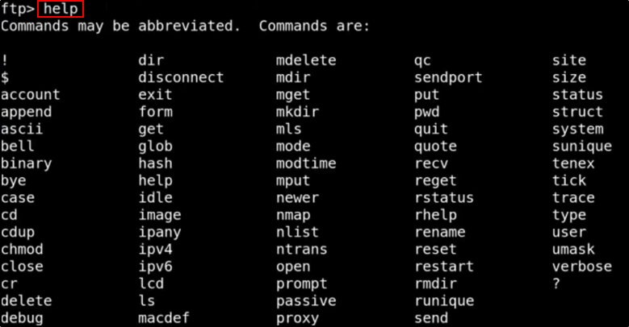

Walktrough - Devel
Windows Machine
First, start a "nmap -T4 -A -p- IPADDRESS"


We have a FTP (with Anonymous Login) and a Microsoft IIS httpd 7.5 (Web Server)
################################################################
PORT 80 (WEB): MICROSOFT IIS
First thing we can do is to check the Web Server:
We see a default web page


If we see things like that, we can try to enumerate more with Directory tools (dirbuster):


Let dirbuster scan for you.
NOW, we can see trough nmap scan, we see that there is a welcome.png file:
This is the same file used for default page!!!
We can change it (or the default page) to let the server execute something else!!!


Let's try to log with FTP (anonymous):



We can put files with “put" command:
As an example, we put the “dog.jpg” file on the FTP server


What is the whole point: FTP is not a problem (to put files on)
But... if we can execute them somehow, that will be a problem (for them)!!!
In this case, we can create an exploit to be executed on the machine:
We will use MSFVenom
For easy cheatsheets: msfvenom cheat sheet on Google
https://netsec.ws/?p=331


(With -a you can decide the architecture: if in case x64/x86 doesn't work, try switching with the other)


Now, open an handler to listen this future payload


It is litteraly emtpy. We need to set a payload (the same choosen in MSFVenom)


Run the handler listener:


Now, put the exploit file on FTP server:
You can use “put” for ASCII files or “binary” for binary files


... and open the file using the Web Server


And we are in!!!
But not a NT AUTHORITY\SYSTEM


We can try to use getsystem to get a privilege escalation:


Crap. Didn't work.
Background our session and try a POST-EXPLOITATION module:
THE SUGGESTER


The suggester will suggest us some post exploitation modules to use:
If one doesn't work, try the others.


We will try to use the kitrap0d


Run kitrap0d:


No session created.
But now, if we use “options” we can see that we have a payload with a wrong IP address!!!
Let's change and try again


Run (again) kitrap0d with the correct IP Address
(CHANGE THE PORT NUMBER TO SOMETHING NOT USED E.G. 4445)


In this case, you need to do the exploit again:
1) Set up a listener handler with Metasploit (on 4444 in this case)
2) Go to URL and execute the file (to let the exploit to connect to us)
3) Set the session in background
4) Set kitrap0d with the NEW SESSION NUMBER
5) Run kitrap0d
If all works, you should have a response on the handler like this one: